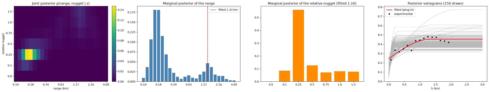
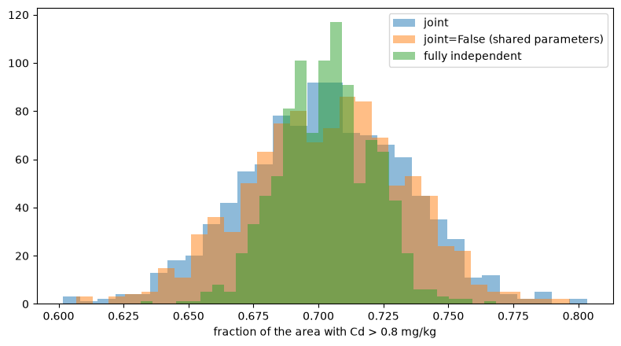

Dataset: Jura soil survey, Swiss Jura (Data/00_shared/data_geostatistics/jura_data.csv, 359 samples) + prediction grid (Data/00_shared/data_geostatistics/jura_grid.csv, 5,957 nodes on a 50 m lattice; a 100 m subset of 1,540 nodes is used for maps)
Target: cadmium (Cd, mg/kg), modelled on the log scale; raw Cd for the transformed model; the indicator Cd > 0.8 mg/kg for the binomial model
Ordinary kriging works in two steps: estimate the variogram, then krige as if that variogram were exact. The kriging variance therefore covers only the interpolation error. It ignores how uncertain the fitted nugget, sill and range are, so it understates the total uncertainty, more so with few data or a poorly determined range.
Bayesian kriging treats the trend coefficients \(\boldsymbol\beta\), the variance \(\sigma^2\), the range \(\phi\) and the relative nugget \(\tau\) as unknowns with prior distributions. It predicts with the posterior predictive distribution, which averages kriging over every parameter value in proportion to how well it explains the data. GeoLattice follows the approach of geoR’s krige.bayes (Diggle & Ribeiro, 2007). The range and nugget take values on a discrete grid; for each grid point the trend and variance are integrated out exactly with a conjugate prior. The predictive distribution is then a finite mixture of Student-t distributions, so its mean, variance, quantiles and exceedance probabilities are all exact.
Object
Model
ConjugateBayesianKriging
fixed range and nugget; unknown trend and variance (Student-t predictive)
BayesianKriging
discrete priors on range and relative nugget; conjugate trend and variance
BayesianTransformedKriging
adds a Box-Cox parameter \(\lambda\) for skewed positive data
BayesianGLMKriging
Poisson or binomial data, sampled by MCMC
bayesian_kriging
one call: fit BayesianKriging, return a prediction table
On the Jura cadmium data, with the same 70/30 split as the EBK notebook, the notebook:
shows that conjugate Bayesian kriging is ordinary kriging with wider, Student-t intervals;
computes the grid posterior of range and nugget, its sensitivity to the prior, and model choice by marginal likelihood;
validates the predictive intervals at the held-out sites, against plug-in kriging and EBK;
adds the rock type as a covariate;
maps predictions and exceedance probabilities, and uses joint simulation to get the uncertainty of the contaminated area;
fits a Box-Cox transformed model to raw cadmium, and a binomial model to the guide-value exceedances.
Theory
The model
For \(n\) observations \(\mathbf{z} = (z(\mathbf{x}_1), \dots, z(\mathbf{x}_n))^\top\),
\(\mathbf{F}\) is the \(n \times p\) trend matrix: a constant (trend=0), linear (1) or quadratic (2) polynomial in the coordinates, plus optional covariates;
\(\mathbf{R}(\phi)_{ij} = \rho(\lVert\mathbf{x}_i - \mathbf{x}_j\rVert; \phi)\) is the correlation matrix of the chosen model, with \(\rho(h) = 1 - \gamma(h)\) for a unit-sill, zero-nugget variogram (correlation_function);
\(\sigma^2\) is the partial sill, and \(\tau = \text{nugget}/\sigma^2\) the relative nugget.
Priors
Trend: flat, \(p(\boldsymbol\beta) \propto 1\) (beta_prior="flat"), or normal, \(\boldsymbol\beta \mid \sigma^2 \sim \mathcal{N}(\mathbf{m}, \sigma^2 \mathbf{V}_\beta)\) (("normal", m, Vb)).
Range and relative nugget: discrete priors on range_grid and nugget_grid: "uniform", "reciprocal" (\(\propto 1/\phi\)), "squared_reciprocal", or any weights.
The conjugate posterior for a fixed correlation
With \(\phi\) and \(\tau\) fixed, write \(\mathbf{A} = \mathbf{F}^\top\mathbf{V}^{-1}\mathbf{F}\). Under the flat and reciprocal priors, the posterior of the trend is centred at the GLS estimate and the variance has a scaled inverse-\(\chi^2\) posterior (Kitanidis, 1986):
At a new location \(\mathbf{x}_0\), with \(\mathbf{r}_0\) the correlations to the data and \(\mathbf{f}_0\) its trend row, integrating out \(\boldsymbol\beta\) and \(\sigma^2\) gives a Student-t predictive with \(n - p\) degrees of freedom:
Here \(v_{00} = 1\) for the signal and \(1 + \tau\) for a new observation.
The location is the universal kriging predictor: ordinary kriging when trend=0.
The bracket is the universal kriging variance in correlation units. So the conjugate Bayesian predictor is kriging with the sill replaced by its estimate \(S^2\), and the Gaussian replaced by a heavier-tailed Student-t.
With the normal and scaled inverse-\(\chi^2\) priors, the same holds with updated quantities:
The marginal likelihood of the correlation parameters
Integrating \(\boldsymbol\beta\) and \(\sigma^2\) out of the likelihood leaves the marginal likelihood of \((\phi, \tau)\). Under the flat and reciprocal priors (the restricted likelihood),
With proper priors, \(\mathbf{z}\) is marginally multivariate Student-t, with scale matrix \(s_0^2(\mathbf{V} + \mathbf{F}\mathbf{V}_\beta\mathbf{F}^\top)\) and \(n_0\) degrees of freedom.
The grid posterior and the predictive mixture
The posterior weight of grid point \(k = (\phi_k, \tau_k)\) is
the variance \(\sum_k w_k \bigl[s_k^2 \nu_k/(\nu_k - 2) + \mu_k^2\bigr] - \text{mean}^2\), by the law of total variance, with a within-model term and a between-model term;
quantiles, by inverting the mixture cdf (predict_quantiles);
Signal or observation. With a nugget, signal=True (the default) predicts the noise-free process \(\mathbf{f}^\top\boldsymbol\beta + S(\mathbf{x})\), while signal=False predicts a new measurement, which adds the nugget variance. Validation against held-out measurements uses signal=False.
Joint simulation.predictive_samples(..., joint=True) draws whole fields. For each draw it picks a grid point \(k\) with probability \(w_k\), then \(\sigma^2\), then \(\boldsymbol\beta\), then a conditional Gaussian field over the prediction points with their full covariance. Joint draws are needed for any quantity that combines several locations, such as an area above a threshold or a block mean.
Transformed Gaussian kriging
For positive, skewed data, BayesianTransformedKriging adds a Box-Cox parameter \(\lambda\) to the grid (De Oliveira, Kedem & Short, 1997). It uses the geometric-mean normalised transform
\[
w = \frac{z^\lambda - 1}{\lambda\, \dot z^{\lambda - 1}} \quad (\lambda \ne 0), \qquad w = \dot z \log z \quad (\lambda = 0),
\]
with \(\dot z\) the geometric mean of the data. Its Jacobian is 1, so the marginal likelihoods of different \(\lambda\) can be compared directly, and lambda_posterior_ gives the posterior of \(\lambda\). Predictions are posterior predictive draws back-transformed to the data scale. This avoids the bias corrections that lognormal kriging needs.
Generalized linear kriging by MCMC
For counts or binary data, BayesianGLMKriging fits a spatial generalized linear mixed model (Diggle, Tawn & Moyeed, 1998):
Nothing integrates analytically, so the posterior is sampled by MCMC (Christensen, 2004). The latent field is whitened, \(\mathbf{S} = \sigma\mathbf{L}(\phi)\boldsymbol\Gamma\) with \(\mathbf{L}\mathbf{L}^\top = \mathbf{R} + \tau\mathbf{I}\) and \(\boldsymbol\Gamma \sim \mathcal{N}(\mathbf{0}, \mathbf{I})\), which decorrelates it. \(\boldsymbol\Gamma\) is updated by the Metropolis-adjusted Langevin algorithm (MALA), which proposes
with the step size \(h\) adapted during burn-in toward 57% acceptance. The other updates:
\(\boldsymbol\beta\) and \(\log\sigma^2\) by random-walk Metropolis;
the range by moves to neighbouring values of its grid.
Predictions krige the latent field for each kept sample and transform to the rate or probability.
Relation to plug-in kriging and EBK
Plug-in kriging uses a single parameter value and a Gaussian.
Conjugate Bayesian kriging keeps the range and nugget fixed but accounts for the trend and sill.
BayesianKriging also accounts for the range and nugget, through their posterior.
EBK approximates the same averaging without priors: it simulates from one fitted variogram, refits, and weights the refits by cross-validation.
All of them give similar point predictions. They differ in how wide, and how honest, the intervals are, and Section 7 measures that.
Python Setup
BayesianKriging and its relatives run on the CPU with NumPy and SciPy. The cost is one Cholesky factorization of the \(n \times n\) correlation matrix per grid point, which is fine for a few thousand data points. Plug-in OrdinaryKriging and EmpiricalBayesianKriging are used for comparison.
Installation. This notebook needs installation option 4 (core, spatial analysis, spatial statistics and geostatistics): pip install "geolattice[geostats]". See “Installation options” in the GeoLattice README.
The Jura data (Atteia et al., 1994; Goovaerts, 1997) are 359 topsoil samples from a 14.5 km² area of the Swiss Jura. Coordinates are in kilometres. Cadmium is skewed, so it is modelled as \(\log(\text{Cd})\). The split is the same 70/30 stratified split by land use as in the EBK notebook (StratifiedShuffleSplit, random_state=42). Maps use every second row and column of jura_grid.csv (100 m).
train 251, test 108, map nodes 1540
log(Cd): mean 0.060, sd 0.656; raw Cd skewness 1.48
Plug-in Kriging vs Conjugate Bayesian Kriging
A spherical variogram is fitted to log(Cd), as in the EBK notebook. BayesianKriging.from_variogram turns it into a ConjugateBayesianKriging with the same range and nugget ratio. According to Section 2.3:
the predictive location equals the ordinary kriging prediction;
the predictive scale is the kriging variance with the sill replaced by its posterior estimate \(S^2\);
the distribution is Student-t with \(n - 1\) degrees of freedom.
spherical variogram: nugget 0.245, partial sill 0.210, range 1.334 km (relative nugget 1.16)
conjugate posterior: S^2 = 0.213 (fitted partial sill 0.210), dof = 250
✅ [PASS] conjugate Bayesian mean == ordinary kriging max |diff| = 9.5e-09
mean predictive sd: plug-in OK 0.559, conjugate Bayesian 0.565
The conjugate Bayesian predictive mean equals ordinary kriging to \(10^{-8}\), as the theory says. Its spread is only slightly wider (mean sd 0.565 against 0.559):
with 251 data, the Student-t with 250 degrees of freedom is practically Gaussian;
the posterior sill estimate \(S^2 = 0.213\) is almost the fitted partial sill (0.210).
Uncertainty about the trend and the sill matters little at this sample size. It matters with few data, where the degrees of freedom are small and the t tails heavy. The larger source of uncertainty is the range and the nugget, which the next section treats.
The Grid Posterior
BayesianKriging puts the spherical range on 25 values from 0.1 to 4 km and the relative nugget on 0 to 1.5, both with uniform priors, and computes the exact posterior over the 25 × 7 grid.
The joint posterior over range and relative nugget, its two marginals, and draws of all parameters (sample_parameters). Each draw gives a complete variogram, \(\gamma(h) = \sigma^2[\tau + 1 - \rho(h; \phi)]\), so the spread of plausible variograms can be drawn against the fitted one.
Code
W = post.pivot(index="nugget_ratio", columns="range", values="weight")fig, axes = plt.subplots(1, 4, figsize=(25, 4.8))im = axes[0].imshow(W.values, origin="lower", aspect="auto", cmap="viridis", extent=[0, len(RANGE_GRID), 0, len(NUGGET_GRID)])axes[0].set_xticks(np.arange(0, len(RANGE_GRID), 4) +0.5, [f"{r:.2f}"for r in RANGE_GRID[::4]])axes[0].set_yticks(np.arange(len(NUGGET_GRID)) +0.5, NUGGET_GRID)axes[0].set_xlabel("range (km)")axes[0].set_ylabel("relative nugget")axes[0].set_title("Joint posterior p(range, nugget | z)")plt.colorbar(im, ax=axes[0], fraction=0.046, pad=0.04)pr = post.groupby("range").weight.sum()axes[1].bar(np.arange(len(pr)), pr.values, color="steelblue")axes[1].set_xticks(np.arange(0, len(pr), 4), [f"{r:.2f}"for r in pr.index[::4]])axes[1].axvline(np.argmin(np.abs(RANGE_GRID - rng_)), color="r", ls="--", label=f"fitted {rng_:.2f} km")axes[1].set_title("Marginal posterior of the range")axes[1].legend()pn = post.groupby("nugget_ratio").weight.sum()axes[2].bar([str(v) for v in pn.index], pn.values, color="darkorange")axes[2].set_title(f"Marginal posterior of the relative nugget (fitted {nug / psill:.2f})")samples = bk.sample_parameters(300, seed=1)hh = np.linspace(0, 3, 200)for _, s in samples.head(150).iterrows(): axes[3].plot(hh, s.sigma2 * (s.nugget_ratio +1- correlation_function(hh, "spherical", s.range)), color="0.7", lw=0.6)axes[3].plot(hh, vg(hh), "r-", lw=2, label="fitted (plug-in)")axes[3].plot(vg.lags, vg.experimental, "ko", ms=4, label="experimental")axes[3].set_xlabel("h (km)")axes[3].set_title("Posterior variograms (150 draws)")axes[3].legend()plt.tight_layout()plt.show()summ = samples[["range", "nugget_ratio", "sigma2", "nugget", "beta_intercept"]].describe(percentiles=[0.05, 0.5, 0.95])display(summ.loc[["mean", "5%", "50%", "95%"]].round(3))

range
nugget_ratio
sigma2
nugget
beta_intercept
mean
0.471
0.441
0.310
0.121
0.067
5%
0.135
0.100
0.202
0.042
-0.054
50%
0.185
0.250
0.312
0.086
0.070
95%
1.855
1.025
0.417
0.261
0.177
The likelihood disagrees with the fitted variogram. The weighted least-squares fit to the binned variogram gave a long range (1.33 km) with a large nugget (relative nugget 1.16). The likelihood prefers a short range (posterior median 0.19 km) with a moderate nugget (median 0.25). Binning over 15 lags averages away the short-range structure that the likelihood, which uses every pair of data, picks up.
The range posterior is skewed. Its 90% interval runs from 0.14 to 1.9 km, and the long tail toward the fitted range keeps the mean at 0.47 km. The data cannot rule out the long-range interpretation; they just favour the short one.
The variance components are better determined. The partial sill has a 90% interval of 0.20-0.42 and the absolute nugget 0.04-0.26 (log units squared).
The posterior variogram draws show this spread directly: many plausible variograms, most rising faster than the plug-in fit.
Prior sensitivity
The same fit with the reciprocal prior on the range (\(p(\phi) \propto 1/\phi\), uniform on the log scale) and with a squared reciprocal prior on the relative nugget, which favours small nuggets.
The prior matters for the parameters. It shifts the posterior means: the range from 0.49 km (uniform prior) to 0.22 km (reciprocal) and 0.16 km (reciprocal plus a prior favouring small nuggets), and the nugget ratio from 0.46 to 0.18. The data weakly identify the long-range tail, so a prior that downweights large ranges removes it.
The prior hardly matters for predictions. Test RMSE moves by 0.02 and the mean predictive sd by 0.015. Predictions depend on the short-range behaviour, which the data determine well.
Report the priors with the results, and check this kind of sensitivity whenever the parameters themselves are of interest.
bayesian_kriging does the fit and the prediction table in one call:
Under the same priors, the marginal likelihoods of different correlation models can be compared: their sum over the grid, weighted by the prior, is the model evidence, and the ratio of two evidences is a Bayes factor. The four main models are compared.
Code
from scipy.special import logsumexprows, models = [], {}for model in ["spherical", "exponential", "gaussian", "matern"]: m = BayesianKriging(model, nu=1.0, range_grid=RANGE_GRID, nugget_grid=NUGGET_GRID).fit(xy, z) models[model] = m p_ = m.posterior_ rows.append({"model": model, "log evidence": logsumexp(p_.log_marginal + p_.log_prior),"posterior mean range": (p_.weight * p_.range).sum(),"posterior mean nugget ratio": (p_.weight * p_.nugget_ratio).sum()})ev = pd.DataFrame(rows).set_index("model")ev["relative log evidence"] = ev["log evidence"] - ev["log evidence"].max()ev["posterior model probability"] = np.exp(ev["relative log evidence"]) / np.exp(ev["relative log evidence"]).sum()ev.round(3)
log evidence
posterior mean range
posterior mean nugget ratio
relative log evidence
posterior model probability
model
spherical
-560.515
0.485
0.462
-2.819
0.052
exponential
-557.696
0.197
0.458
0.000
0.874
gaussian
-561.375
0.117
0.424
-3.680
0.022
matern
-560.517
0.147
0.708
-2.821
0.052
The exponential model has by far the highest evidence: posterior model probability 0.87 under equal model priors. Spherical and Matérn (\(\nu = 1\)) get 0.05 each, and Gaussian 0.02. That agrees with the short-range structure found above: the exponential model rises steeply from the origin, and its posterior mean range of 0.20 km in the exp(-h/a) parametrization corresponds to a practical range of about 0.6 km. The Gaussian model, which is smooth at the origin, fits worst. The rest of the notebook keeps the spherical model for comparability with the EBK notebook; with these Bayes factors, the exponential would be the natural choice for a final map.
Validation at the Held-Out Sites
Four predictors of log(Cd) are scored at the 108 held-out samples. All of them predict new measurements (signal=False for the Bayesian models):
plug-in ordinary kriging, with a Gaussian interval;
conjugate Bayesian kriging;
BayesianKriging, the full grid posterior;
EBK with 40 realizations, as in the EBK notebook.
Metric
Meaning
Better
RMSE
accuracy of the predictive mean
lower
coverage of the 90% interval
calibration
close to 0.90
width of the 90% interval
sharpness
lower, if calibrated
CRPS
quality of the whole predictive distribution, by Monte Carlo
All four predictors are close at this sample size:
Point accuracy. RMSE is 0.556-0.559 for all of them.
Calibration. All are well calibrated and slightly conservative: their 90% intervals cover 93-94% of the held-out values.
Interval width.BayesianKriging has the widest intervals (1.90 against 1.84 for plug-in kriging), because they include the range and nugget uncertainty. It also has the best CRPS (0.306 against 0.314), so the wider intervals are better placed rather than just wider.
EBK and conjugate Bayesian kriging sit between the two, as expected for partial accounts of parameter uncertainty.
With 251 well-spread samples, parameter uncertainty is a small part of the predictive uncertainty, so all methods agree. The differences grow with fewer data or poorly determined ranges, which is where Bayesian kriging is worth its cost.
A Covariate: Rock Type
Cadmium in the Jura depends on the parent rock (Goovaerts, 1997), and the geology is mapped at every grid node. Rock type enters the trend as four indicator columns, with Argovian as the reference level. The posterior of each coefficient is a contrast in log(Cd) with Argovian, after accounting for spatial correlation. The rock recorded at the samples is used for fitting, and the mapped rock for prediction.
Code
ROCKS = {1: "Argovian", 2: "Kimmeridgian", 3: "Sequanian", 4: "Portlandian", 5: "Quaternary"}NAME2CODE = {v: k for k, v in ROCKS.items()}def rock_dummies(codes): codes = np.asarray(codes)return np.column_stack([(codes == k).astype(float) for k in [2, 3, 4, 5]])X_train, X_test = rock_dummies(train.Rock), rock_dummies(test.Rock)X_grid = rock_dummies(grid_df.Rock.map(NAME2CODE))bk_rock = BayesianKriging("spherical", range_grid=RANGE_GRID, nugget_grid=NUGGET_GRID).fit(xy, z, covariates=X_train)names = ["intercept (Argovian)"] + [f"{ROCKS[k]} - Argovian"for k in [2, 3, 4, 5]]draws = bk_rock.sample_parameters(4000, seed=2)bcols = [c for c in draws.columns if c.startswith("beta_")]coef = pd.DataFrame({"posterior mean": draws[bcols].mean().values,"5%": draws[bcols].quantile(0.05).values, "95%": draws[bcols].quantile(0.95).values,"P(> 0)": (draws[bcols] >0).mean().values}, index=names)display(coef.round(3))r_mean, r_sd = bk_rock.predict(xy_test, covariates=X_test, return_std=True, signal=False)rq = bk_rock.predict_quantiles(xy_test, [0.05, 0.95], covariates=X_test, signal=False)p0 = bk.posterior_p1 = bk_rock.posterior_print(f"posterior mean range: without rock {(p0.weight * p0.range).sum():.2f} km, with rock {(p1.weight * p1.range).sum():.2f} km")print(f"posterior mean nugget ratio: without {(p0.weight * p0.nugget_ratio).sum():.2f}, with {(p1.weight * p1.nugget_ratio).sum():.2f}")print(f"test RMSE: without rock {val.loc['BayesianKriging (grid)', 'RMSE']:.3f}, with rock {np.sqrt(np.mean((r_mean - z_test) **2)):.3f}; "f"90% coverage with rock {np.mean((z_test >= rq[:, 0]) & (z_test <= rq[:, 1])):.2f}, width {np.mean(rq[:, 1] - rq[:, 0]):.2f}")
posterior mean
5%
95%
P(> 0)
intercept (Argovian)
-0.253
-0.417
-0.082
0.006
Kimmeridgian - Argovian
0.437
0.233
0.643
1.000
Sequanian - Argovian
0.423
0.196
0.650
0.999
Portlandian - Argovian
0.573
0.082
1.055
0.973
Quaternary - Argovian
0.306
0.048
0.561
0.976
posterior mean range: without rock 0.48 km, with rock 0.16 km
posterior mean nugget ratio: without 0.46, with 0.28
test RMSE: without rock 0.556, with rock 0.540; 90% coverage with rock 0.93, width 1.83
The coefficients confirm the geology. Relative to Argovian, log(Cd) is higher on every other rock: Kimmeridgian +0.44 (90% interval 0.23 to 0.64), Sequanian +0.42, Quaternary +0.31, and Portlandian +0.57, with a wide interval since it has few samples. The posterior probability that each effect is positive is 0.97 or more. A difference of 0.44 in log units means about 55% more cadmium.
The covariate absorbs part of the spatial structure. The posterior mean range drops from 0.48 to 0.16 km and the nugget ratio from 0.46 to 0.28: the broad pattern that a long range had to explain is now explained by the geology.
Predictions improve. Test RMSE falls from 0.556 to 0.540, and the 90% intervals get narrower (1.83 against 1.90) while keeping 93% coverage.
Maps and Exceedance Probabilities
The rock-type model is used on the 1,540-node map grid. Each node gets:
the predictive median of log(Cd), shown as Cd = exp(median);
the predictive standard deviation;
the width of the 90% interval;
the probability that Cd exceeds the Swiss guide value of 0.8 mg/kg, \(P(\log \text{Cd} > \log 0.8)\), exact from the Student-t mixture.
Geology in the map. Because rock type enters the trend, the geology map imprints on the predictions: their level steps at unit boundaries, while the kriged residual adds local detail around the samples.
Uncertainty pattern. The predictive sd and interval width are lowest near samples and highest in gaps and along the boundary.
Exceedance. Few nodes are confidently above (4% with P > 0.9) and none confidently below (P < 0.1) the guide value. Typical cadmium is near 1 mg/kg, so most of the area sits in the uncertain middle of the probability scale. Decisions near a threshold like this one need the full predictive distribution, not just a map of predictions.
Joint simulation: the contaminated area
The fraction of the study area above 0.8 mg/kg is a quantity over many locations, so it needs joint predictive draws. For 600 random map nodes, predictive_samples(..., joint=True) draws whole fields, and each draw gives one area fraction. Two shortcuts are compared with it:
joint=False: each node is drawn separately, but all nodes in one draw share the same parameters (grid point, \(\sigma^2\), \(\boldsymbol\beta\)). Parameter uncertainty is kept; spatial correlation of the residual field is lost.
Fully independent: each node’s draws are shuffled independently across draws, which treats every node as unrelated. This is what you get by combining per-node probabilities as if they were independent.
Code
sub = np.random.default_rng(3).choice(len(grid), 600, replace=False)t0 = time.perf_counter()joint = bk_rock.predictive_samples(grid[sub], 1000, covariates=X_grid[sub], joint=True, seed=4)indep = bk_rock.predictive_samples(grid[sub], 1000, covariates=X_grid[sub], joint=False, seed=4)print(f"1000 joint draws at 600 nodes in {time.perf_counter() - t0:.1f} s")shuffled = np.column_stack([np.random.default_rng(10+ j).permutation(joint[:, j]) for j inrange(joint.shape[1])])areas = {"joint": (joint > np.log(0.8)).mean(1),"joint=False (shared parameters)": (indep > np.log(0.8)).mean(1),"fully independent": (shuffled > np.log(0.8)).mean(1)}fig, ax = plt.subplots(figsize=(8, 4.5))for k, a in areas.items(): ax.hist(a, bins=30, alpha=0.5, label=k)ax.set_xlabel("fraction of the area with Cd > 0.8 mg/kg")ax.legend()plt.tight_layout()plt.show()area_tab = pd.DataFrame({k: {"mean": a.mean(), "sd": a.std(), "q05": np.quantile(a, 0.05), "q95": np.quantile(a, 0.95)}for k, a in areas.items()}).Tdisplay(area_tab.round(3))record("joint draws give a wider area interval than fully independent draws","PASS"if area_tab.loc["joint", "sd"] >1.2* area_tab.loc["fully independent", "sd"] else"FAIL",f"sd joint {area_tab.loc['joint', 'sd']:.3f}, fully independent {area_tab.loc['fully independent', 'sd']:.3f}")
1000 joint draws at 600 nodes in 5.2 s

mean
sd
q05
q95
joint
0.703
0.031
0.650
0.752
joint=False (shared parameters)
0.703
0.030
0.653
0.750
fully independent
0.703
0.018
0.675
0.732
✅ [PASS] joint draws give a wider area interval than fully independent draws sd joint 0.031, fully independent 0.018
Joint draws put the contaminated area fraction at 0.70, with a 90% interval of 0.65-0.75.
Shared parameters, joint=False. Per-node draws that share parameters give almost the same spread (sd 0.030 against 0.031). Here most of the area uncertainty comes from the parameters (the overall level \(\beta\) and the sill), which move every node together. With a posterior range of only 0.16 km, the residual spatial correlation between random nodes adds little.
Fully independent draws miss the shared component and understate the uncertainty by 40% (sd 0.018).
The rule is general: any statement about a region (an area, a total, a mean) needs joint draws, or at least draws that share the parameters.
Transformed Gaussian Kriging of Raw Cadmium
Instead of choosing the log transform beforehand, BayesianTransformedKriging puts the Box-Cox \(\lambda\) on a grid, \(\lambda \in \{-0.5, -0.25, 0, 0.25, 0.5, 0.75, 1\}\), and lets the data weigh the choices. \(\lambda = 0\) is the log, and \(\lambda = 1\) no transform. Predictions come back in mg/kg.
The data choose the log. The posterior puts 97% of its mass on \(\lambda = 0\), and 3% on 0.25.
Same predictions as the log model. The transformed model’s predictions in mg/kg therefore agree with the log model back-transformed: RMSE of the median 0.744 against 0.746 mg/kg, 90% coverage 0.93 against 0.94, and the same interval widths.
What the transformed model adds. It makes the choice of transform part of the inference instead of an assumption, and gives the predictive mean in mg/kg directly from the draws. That mean has a lower RMSE than the median (0.725), because RMSE rewards the mean of a skewed distribution.
Binomial Kriging of the Guide-Value Exceedance
Sometimes only a binary outcome is recorded or wanted: here, whether a sample exceeds 0.8 mg/kg. BayesianGLMKriging("binomial") models the probability of exceedance through a logit-linked latent Gaussian field, with one trial per site, and is fitted by MCMC. The rock type enters the trend again.
Binary data with one trial per site carry little information about the latent variance, so the priors on \(\sigma^2\) (sigma2_prior=(df, scale2), scaled inverse-\(\chi^2\)) and on \(\boldsymbol\beta\) (beta_prior_sd) matter. Three prior settings are compared first.
correlation between the two probability maps: 0.86
The priors matter for binary data. The default weak prior lets the latent variance grow to about 150 on the logit scale, which is implausibly large. The latent field then pins each training site to its observed class. The test Brier score is still good (0.158), but the parameters are not meaningful.
The moderate prior (scaled inverse-\(\chi^2\) with 4 degrees of freedom and scale 1 on \(\sigma^2\), and sd 2.5 on the coefficients) gives \(\sigma^2 \approx 15\), a range of 0.37 km and a Brier score of 0.163.
The tight prior forces a smoother, longer-range field and scores worse (0.184).
Binary data alone come close to the continuous model. With the moderate prior, the binomial model predicts the held-out exceedances almost as well as BayesianKriging on the full log(Cd) values (Brier 0.163 against 0.160), and far better than a constant probability (0.241). The two probability maps correlate at 0.88.
Sampler behaviour. The rock coefficients are positive, as in the continuous model. The MALA acceptance after burn-in (0.21) is below the 0.57 target, a sign that a longer burn-in would tune the step better. The trace plots should be checked for mixing before trusting a single run.
Summary and Conclusions
Code
pd.DataFrame(RESULTS)
Feature
Status
Notes
0
conjugate Bayesian mean == ordinary kriging
PASS
max |diff| = 9.5e-09
1
BayesianKriging 90% coverage in [0.80, 0.97]
PASS
coverage 0.94, width 1.90
2
joint draws give a wider area interval than fu...
PASS
sd joint 0.031, fully independent 0.018
3
Box-Cox posterior concentrates on lambda <= 0.5
PASS
P(lambda <= 0.5) = 1.00
Conjugate Bayesian kriging reproduced ordinary kriging exactly (difference about \(10^{-8}\)) and widened its intervals only slightly with 251 data: trend and sill uncertainty matter mostly for small samples.
The grid posterior of range and nugget disagreed with the least-squares variogram fit. The likelihood favoured a short range (median 0.19 km) with a moderate nugget, while the binned fit gave 1.33 km, and the posterior kept a long-range tail. Priors shifted the parameter posteriors but barely changed the predictions. Bayes factors preferred the exponential model (probability 0.87).
At the held-out sites, all methods were well calibrated (90% intervals covering 93-94%). BayesianKriging had the widest intervals and the best CRPS (0.306 against 0.314 for plug-in kriging): wider in the right places, not just wider.
Rock type as a covariate had clear posterior effects (+0.3 to +0.6 log units relative to Argovian, probability of being positive at least 0.97). It shortened the residual range and improved RMSE (0.556 → 0.540) with narrower, still calibrated intervals.
Joint simulation gave the contaminated area fraction (0.70, 90% interval 0.65-0.75). Treating nodes as independent understated its uncertainty by 40%, because parameter uncertainty moves all nodes together.
The Box-Cox model chose the log transform (posterior 0.97 at \(\lambda = 0\)). The binomial GLMM predicted exceedances nearly as well from the 0/1 data alone as the continuous model did from the full data, once the variance prior was made reasonable.
De Oliveira, V., Kedem, B. & Short, D.A. (1997). Bayesian prediction of transformed Gaussian random fields. Journal of the American Statistical Association 92, 1422-1433.
Christensen, O.F. (2004). Monte Carlo maximum likelihood in model-based geostatistics. Journal of Computational and Graphical Statistics 13, 702-718.
Whitened MALA sampler
Krivoruchko, K. (2012). Empirical Bayesian kriging. ArcUser Fall 2012, 6-10.
EBK comparison
Atteia, O., Dubois, J.-P. & Webster, R. (1994). Geostatistical analysis of soil contamination in the Swiss Jura. Environmental Pollution 86, 315-327.
The Jura data
Goovaerts, P. (1997). Geostatistics for Natural Resources Evaluation. Oxford University Press.
Jura case study, rock-type effect
Gneiting, T. & Raftery, A.E. (2007). Strictly proper scoring rules, prediction, and estimation. Journal of the American Statistical Association 102, 359-378.